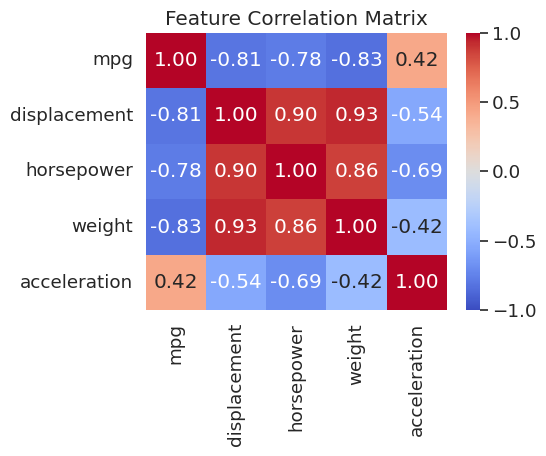
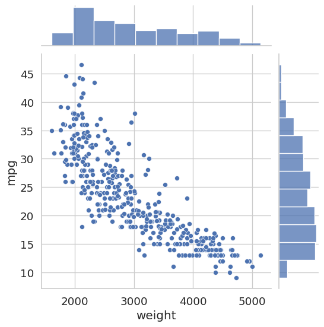
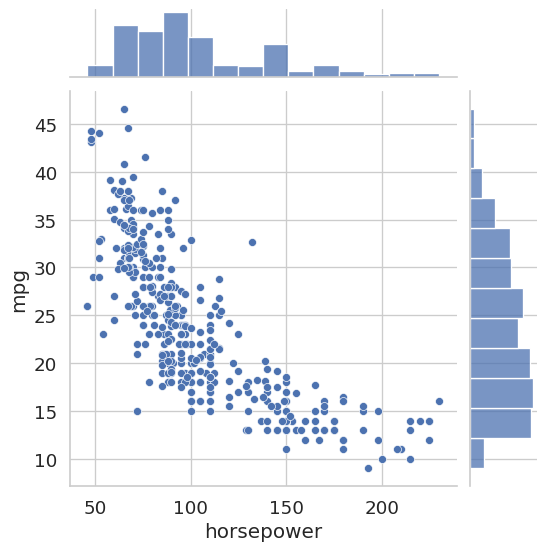
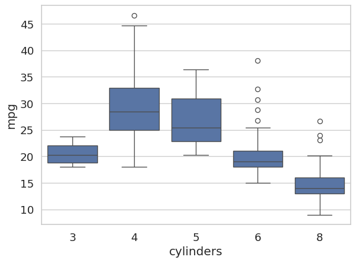
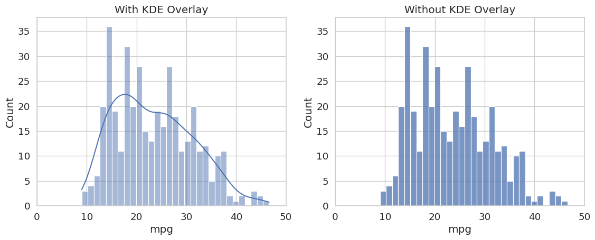
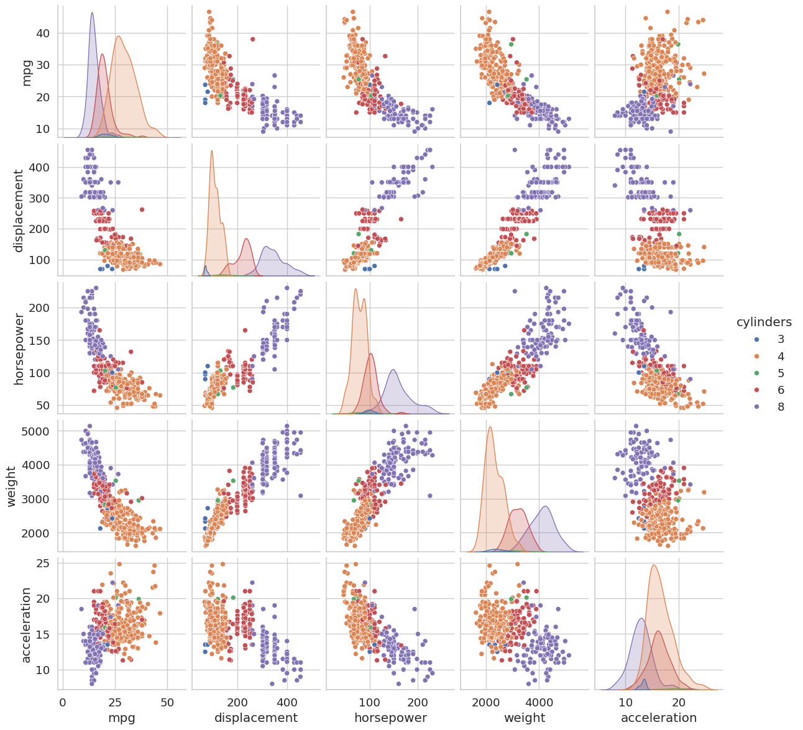

import pandas as pd
import numpy as np
import matplotlib.pyplot as plt
import seaborn as sns
sns.set_theme(style='whitegrid', font_scale=1.25)
AUTO_CSV = 'https://raw.githubusercontent.com/GLI-Lab/machine-learning-course/students/data/auto.csv'Lab1-4. Pandas Basics

Objectives
- Understand core pandas data structures: Series and DataFrames.
- Data Inspection: Learn how to quickly explore and summarize a dataset.
- Data Loading and Cleaning: Load a real CSV dataset, handle missing values, and prepare it for a model.
- NumPy Conversion: Convert a cleaned DataFrame into NumPy arrays ready for sklearn or PyTorch.
- Visualization with Seaborn: Practice creating scatter plots, box plots, histograms, and pair plots directly from a DataFrame.
NoteBasic Concept: Why Pandas for Machine Learning?
While NumPy handles the heavy mathematical lifting, pandas is the ultimate tool for data manipulation and analysis. Real-world data is messy: it has missing values, inconsistent formatting, and mixed data types such as text, dates, and numbers. Pandas is built on top of NumPy but provides a tabular interface (similar to Excel or SQL) that makes cleaning, filtering, and preparing datasets for machine learning highly intuitive.
Background
Pandas revolves around two core data structures.
A Series is a one-dimensional labeled array. Think of it as a single column in a spreadsheet, where each element has an index label. A DataFrame is a two-dimensional table composed of multiple Series objects sharing the same index. Each column is a Series, and the DataFrame itself holds them together under a unified row index.
The relationship can be summarized as:
\[\text{DataFrame} \supset \text{Series} \supset \{\text{Scalar values}\}\]
Understanding this hierarchy is essential because most pandas operations, such as filtering, grouping, and aggregation, work on either the Series level or the DataFrame level, and mixing them up is one of the most common sources of bugs for beginners.
0. Setup
Run this cell first. All subsequent cells depend on these imports and the dataset URL.
1. Core Data Structures: DataFrames and Series
1.1 DataFrame
A DataFrame is a two-dimensional table. The most common way to construct one from scratch is to pass a Python dictionary where each key becomes a column name and each value is a list of column entries.

# 2-Dimensional: DataFrame
# Bob's age is intentionally left as NaN to simulate a missing value
data = {
'Name': ['Alice', 'Bob', 'Charlie', 'Diana', 'Eve'],
'Age': [25, np.nan, 22, 45, 33],
'Income': [55000, 48000, 32000, 110000, 75000],
'Purchased': [0, 1, 0, 1, 1]
}
df = pd.DataFrame(data)
print("DataFrame:\n", df)DataFrame:
Name Age Income Purchased
0 Alice 25.0 55000 0
1 Bob NaN 48000 1
2 Charlie 22.0 32000 0
3 Diana 45.0 110000 1
4 Eve 33.0 75000 1Observe that Bob’s Age shows as NaN (Not a Number). This is how pandas represents missing data.
1.2 Series
A Series is a one-dimensional array with a labeled index. You can think of it as a single column of data.

# 1-Dimensional: Series
# Each element has an automatically assigned integer index (0, 1, 2, ...)
ages = pd.Series([25, 30, 22, 45, 33], name="Age")
print("Series:\n", ages)
print("\nShape:", ages.shape)Series:
0 25
1 30
2 22
3 45
4 33
Name: Age, dtype: int64
Shape: (5,)Notice that the output shows both the index (left column) and the values (right column). This index is what makes a Series different from a plain NumPy array.
2. Inspecting Data
Before applying any machine learning algorithm, you must understand the shape, data types, and statistical distribution of your data. These three methods are the first thing you should run on any new dataset.
# View the first few rows (default is 5; here we request 3)
print("=== Head ===")
print(df.head(3))
# Get a concise summary: column names, non-null counts, and dtypes
print("\n=== DataFrame Info ===")
df.info()
# Generate descriptive statistics for all numeric columns
print("\n=== Summary Statistics ===")
print(df.describe())=== Head ===
Name Age Income Purchased
0 Alice 25.0 55000 0
1 Bob NaN 48000 1
2 Charlie 22.0 32000 0
=== DataFrame Info ===
<class 'pandas.DataFrame'>
RangeIndex: 5 entries, 0 to 4
Data columns (total 4 columns):
# Column Non-Null Count Dtype
--- ------ -------------- -----
0 Name 5 non-null str
1 Age 4 non-null float64
2 Income 5 non-null int64
3 Purchased 5 non-null int64
dtypes: float64(1), int64(2), str(1)
memory usage: 292.0 bytes
=== Summary Statistics ===
Age Income Purchased
count 4.000000 5.000000 5.000000
mean 31.250000 64000.000000 0.600000
std 10.275375 29991.665509 0.547723
min 22.000000 32000.000000 0.000000
25% 24.250000 48000.000000 0.000000
50% 29.000000 55000.000000 1.000000
75% 36.000000 75000.000000 1.000000
max 45.000000 110000.000000 1.000000
TipWhat to Look for in
.info() and .describe()
.info() tells you how many non-null values each column has. A column whose non-null count is less than the total row count contains missing values that need to be addressed before training.
.describe() gives you the count, mean, standard deviation, and quartiles. A large gap between the 75th percentile (75%) and the maximum (max) often signals an outlier.
3. Loading a Real Dataset
The Auto MPG dataset contains fuel consumption and other attributes for 397 cars manufactured in the 1970s and 1980s. The raw CSV uses the symbol ? to represent missing values, so we pass na_values=['?'] to convert them to NaN automatically on load.
auto_df = pd.read_csv(AUTO_CSV, na_values=['?'])
print("Shape:", auto_df.shape)
auto_df.head()Shape: (397, 9)| mpg | cylinders | displacement | horsepower | weight | acceleration | year | origin | name | |
|---|---|---|---|---|---|---|---|---|---|
| 0 | 18.0 | 8 | 307.0 | 130.0 | 3504 | 12.0 | 70 | 1 | chevrolet chevelle malibu |
| 1 | 15.0 | 8 | 350.0 | 165.0 | 3693 | 11.5 | 70 | 1 | buick skylark 320 |
| 2 | 18.0 | 8 | 318.0 | 150.0 | 3436 | 11.0 | 70 | 1 | plymouth satellite |
| 3 | 16.0 | 8 | 304.0 | 150.0 | 3433 | 12.0 | 70 | 1 | amc rebel sst |
| 4 | 17.0 | 8 | 302.0 | 140.0 | 3449 | 10.5 | 70 | 1 | ford torino |
# Inspect column names
list(auto_df.columns)['mpg',
'cylinders',
'displacement',
'horsepower',
'weight',
'acceleration',
'year',
'origin',
'name']# Selecting a single column: returns a Series
auto_df['mpg']0 18.0
1 15.0
2 18.0
3 16.0
4 17.0
...
392 27.0
393 44.0
394 32.0
395 28.0
396 31.0
Name: mpg, Length: 397, dtype: float64# Selecting multiple columns: returns a DataFrame
auto_df[['mpg', 'weight']]| mpg | weight | |
|---|---|---|
| 0 | 18.0 | 3504 |
| 1 | 15.0 | 3693 |
| 2 | 18.0 | 3436 |
| 3 | 16.0 | 3433 |
| 4 | 17.0 | 3449 |
| ... | ... | ... |
| 392 | 27.0 | 2790 |
| 393 | 44.0 | 2130 |
| 394 | 32.0 | 2295 |
| 395 | 28.0 | 2625 |
| 396 | 31.0 | 2720 |
397 rows × 2 columns
# Remove rows with any missing value and confirm the new shape
auto_df.dropna(axis=0, inplace=True)
print("Shape after dropna:", auto_df.shape)Shape after dropna: (392, 9)3.1 Correlation Matrix
Before building a model it is important to understand which features move together. The Pearson correlation between columns \(i\) and \(j\) ranges from \(-1\) (perfect negative) to \(+1\) (perfect positive). A heatmap makes these relationships immediately visible.
numeric_cols = ['mpg', 'displacement', 'horsepower', 'weight', 'acceleration']
corr = auto_df[numeric_cols].corr()
fig, ax = plt.subplots(figsize=(6, 5))
sns.heatmap(corr, annot=True, fmt='.2f', cmap='coolwarm', center=0,
vmin=-1, vmax=1, ax=ax)
ax.set_title("Feature Correlation Matrix")
plt.tight_layout()
plt.show()
weight, displacement, and horsepower are all strongly correlated with each other (r > 0.8) and negatively correlated with mpg. Plotting these relationships will be the focus of the next few sections.
Once the DataFrame is clean, convert it to NumPy arrays before passing it to a model. sklearn and PyTorch both expect NumPy arrays or tensors, not DataFrames.
# All feature columns except the last
X = auto_df.iloc[:, :-1].to_numpy()
# Last column as the label
y = auto_df.iloc[:, -1].to_numpy()
print("X shape:", X.shape)
print("y shape:", y.shape)X shape: (392, 8)
y shape: (392,)4. Scatter Plots with Seaborn
A joint plot from Seaborn combines a central scatter plot with marginal histograms along each axis. This lets you simultaneously see the relationship between two variables and their individual distributions.
sns.jointplot(x='weight', y='mpg', data=auto_df)
plt.show()
sns.jointplot(x='horsepower', y='mpg', data=auto_df)
plt.show()
Both plots reveal a clear negative correlation: heavier cars and more powerful engines are associated with lower fuel efficiency. This kind of pre-modeling insight can inform feature selection decisions later.
5. Categorical Data: Box Plots
A box plot summarizes the distribution of a continuous variable across discrete groups. The box spans the interquartile range (IQR, from the 25th to the 75th percentile), the line inside the box marks the median, and the whiskers extend to roughly 1.5 times the IQR. Points beyond the whiskers are plotted as individual dots and are potential outliers.
Before plotting, we cast the cylinders column to the category dtype. This tells both pandas and Seaborn to treat its unique integer values as discrete labels rather than as a continuous numeric axis.
auto_df['cylinders'] = auto_df['cylinders'].astype('category')
sns.boxplot(x='cylinders', y='mpg', data=auto_df)
plt.show()
The plot makes it immediately clear that 4-cylinder engines tend to achieve much higher fuel efficiency than 6- or 8-cylinder engines, and that the 8-cylinder group shows relatively low variance.
6. Histograms
sns.displot draws a histogram of a single numeric column. Setting kde=True overlays a kernel density estimate (KDE), which is a smooth, continuous approximation of the underlying distribution.
fig, axes = plt.subplots(1, 2, figsize=(12, 5))
sns.histplot(auto_df['mpg'], bins=31, kde=True, ax=axes[0])
axes[0].set_title('With KDE Overlay')
axes[0].set_xlim([0, 50])
sns.histplot(auto_df['mpg'], bins=31, kde=False, ax=axes[1])
axes[1].set_title('Without KDE Overlay')
axes[1].set_xlim([0, 50])
plt.tight_layout()
plt.show()
The distribution is mildly right-skewed, with most cars clustered between 15 and 30 MPG and a tail extending toward higher values. Checking this distribution before training is important: if a feature is heavily skewed, applying a log transformation (as seen in Lab 1-3) can improve model performance.
7. Pair Plots
A pair plot draws a scatter plot for every pair of selected numeric features and a histogram on the diagonal. Coloring points by cylinders reveals whether different engine types cluster differently across feature combinations, which is a quick way to assess class separability before modeling.
sns.pairplot(
auto_df,
vars=['mpg', 'displacement', 'horsepower', 'weight', 'acceleration'],
hue='cylinders'
)
plt.show()
# Summary statistics for a single column
auto_df['mpg'].describe()count 392.000000
mean 23.445918
std 7.805007
min 9.000000
25% 17.000000
50% 22.750000
75% 29.000000
max 46.600000
Name: mpg, dtype: float64
TipReading a Pair Plot
Focus on the off-diagonal cells. A tight, elongated ellipse of points indicates a strong linear correlation between those two features. Features that are highly correlated with each other but not with the target may be redundant and can sometimes be dropped without hurting model performance, a concept you will revisit when studying dimensionality reduction.
Summary
Core data structures. A Series is a one-dimensional labeled array; a DataFrame is a two-dimensional table of Series objects sharing a common index. Most pandas operations work on one of these two levels.
Exploratory Data Analysis. Always run .head(), .info(), and .describe() on a new dataset before building any model. They reveal shape, missing values, data types, and distributional properties at a glance.
Data cleaning. Use na_values=['?'] on load to convert non-standard missing markers to NaN. Use .dropna() to remove incomplete rows before training.
Correlation matrix. df[cols].corr() with sns.heatmap gives a quick overview of which features move together. Strongly correlated pairs (r ≈ ±1) often carry redundant information.
NumPy conversion. Use df.iloc[:, :-1].to_numpy() to extract the feature matrix \(X\) and df.iloc[:, -1].to_numpy() to extract the label vector \(y\). Most ML libraries (sklearn, PyTorch) expect NumPy arrays, not DataFrames.